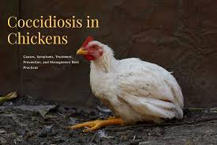
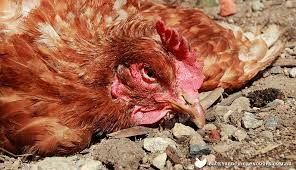
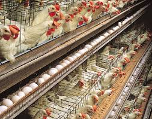
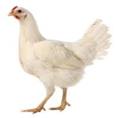

Your comprehensive, AI-driven diagnostic platform for rapid poultry disease detection, early outbreak isolation, and automated veterinary health management.




Upload a chicken photograph or choose a ground-truth dataset specimen for instant neural classification.
Target Organ: Intestinal and cecal mucosal epithelial disruption.
Recommended Medication: Amprolium (0.024% in drinking water for 5 days) or Toltrazuril (7 mg/kg body weight).
Biosecurity: Immediately segregate symptomatic birds; replace wet litter with dry bedding.
Clinical characteristics, pathogen profiles, and prevention strategies for the 4 conditions identified by PoultryDetect.
Articles and biosecurity recommendations curated by the PoultryDetect project.
Coccidiosis is one of the most economically devastating diseases affecting modern poultry farms worldwide. Early recognition through visible fecal changes and automated image screening prevents rapid flock mortality.
This viral infection spreads at lightning speed through pens. Strict biosecurity footbaths, bird segregation, and timely vaccination schedules form the only dependable line of defense against catastrophic outbreak.
Regular health checks, clean cool water, balanced nutritional protein ratios, and continuous ventilation play crucial roles in disease prevention. Utilizing AI diagnostic tools enables early detection before widespread transmission.
Transfer learning pipeline using MobileNetV2 fine-tuned on categorized avian images.
PoultryDetect uses a fine-tuned MobileNetV2 convolutional neural network trained on over 7,000 labeled images from Roboflow. MobileNetV2 uses depthwise separable convolutions and inverted residual bottleneck blocks, providing high diagnostic accuracy with lightweight parameter requirements suitable for low-latency web and edge inference.
Pre-trained on ImageNet & fine-tuned
Validated on independent test split
Categorized Roboflow dataset
Real-time client inference